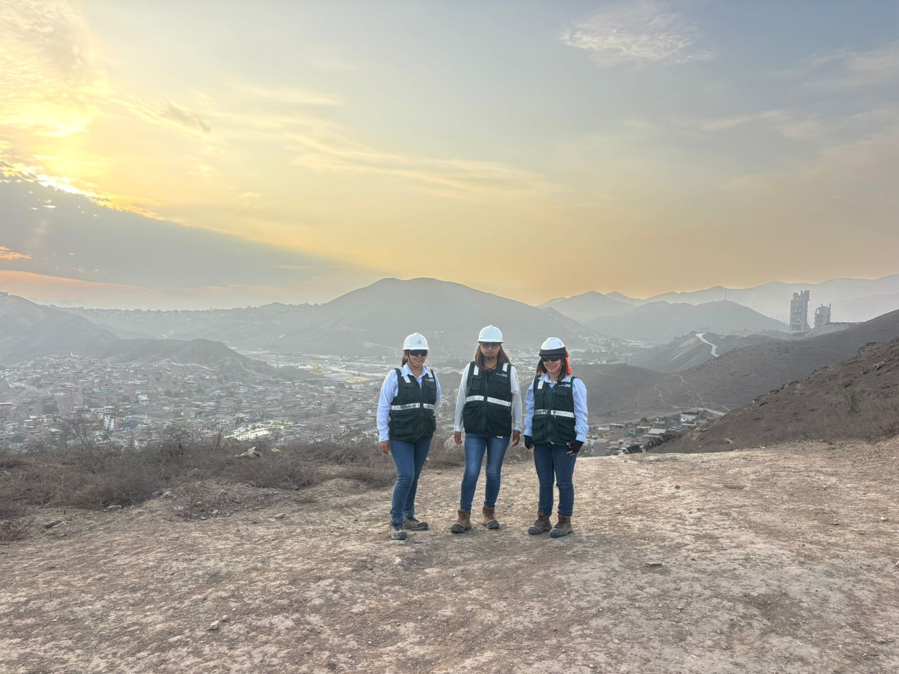

Especialista en gestión ambiental, SSOMA y sistemas integrados
Miriam Lampa
Ingeniera ambiental con experiencia en proyectos de agua, saneamiento y construcción. Enfoque en cumplimiento normativo, control de impactos, reportes técnicos y mejora continua.
Gestión ambiental
SSOMA
Saneamiento
Mejora continua
Acerca de mí
Una presencia profesional clara y cercana
Soy una profesional orientada a resultados, con experiencia en gestión ambiental, seguridad y sistemas integrados en proyectos de construcción y saneamiento. Me caracteriza el compromiso con el cumplimiento normativo, la organización en campo y la búsqueda de soluciones prácticas y sostenibles.
Fuera del trabajo disfruto los viajes, la poesía y una buena taza de café, porque también creo en el equilibrio entre la vida profesional y los pequeños momentos que inspiran.
Mi enfoque
Gestión con criterio técnico y visión preventiva
- Cumplimiento ambiental en obra
- Control de impactos y medidas preventivas
- Reportes técnicos y documentación de campo
- Coordinación con supervisión, contratistas y cliente
Trabajo en campo
Experiencia real en obra
Esta imagen acompaña la web como una referencia directa del trabajo en terreno, la supervisión de obra y la participación activa en proyectos de infraestructura y saneamiento.

Proyectos destacados
Proyectos clave
Constructora MPM S.A.C.
Mejoramiento y ampliación de sistemas de agua potable, alcantarillado y tratamiento de aguas residuales - Etapa 2
Proyecto de gran escala orientado al mejoramiento y ampliación de sistemas de agua potable, alcantarillado y tratamiento de aguas residuales en Lima.
Cumplimiento ambiental de obra
Seguimiento del instrumento de gestión ambiental
Reportes y documentación técnica
Consorcio PTAP Calana
Construcción y equipamiento de una nueva Planta de Tratamiento de Agua Potable de Calana
Proyecto de infraestructura de agua potable con componentes hidráulicos, eléctricos, automatización y laboratorio.
Supervisión ambiental de obra
Acciones preventivas y correctivas
Monitoreo de riesgos e indicadores
Consorcio Aguas de Manchay
Ampliación de los sistemas de agua potable y alcantarillado de la Quebrada de Manchay - 3era Etapa
Proyecto de saneamiento orientado a ampliar los sistemas de agua potable y alcantarillado en la Quebrada de Manchay.
Gestión ambiental en obra
Control de impactos y medidas de control
Acciones preventivas en campo
Trayectoria profesional
Resumen ejecutivo
Especialista Ambiental
Constructora MPM S.A.C.
Ago 2024 - ActualidadProyecto de agua, alcantarillado y tratamiento de aguas residuales.
Especialista Ambiental
Consorcio PTAP Calana
Oct 2021 - Jul 2024Construcción y equipamiento de PTAP.
Especialista Ambiental
Consorcio Aguas de Manchay
Feb 2020 - Sep 2021Ampliación de sistemas de agua potable y alcantarillado.
Especialista en Seguridad y Monitoreo Ambiental
MEJESA S.R.L.
Ene 2020 - Jul 2020Supervisión, monitoreo y apoyo a la gestión de seguridad.
Formación
Base académica
- Ingeniería Ambiental · Universidad Alas Peruanas
- Magíster Global en Gestión Ambiental en Minería · Universidad Técnica de Oruro
- Master Universitario in Business Administration · Università degli Studi Mediterranea di Reggio Calabria
- Máster en Gestión Integrada · CEREM International Business School
Especialización
Certificaciones clave
- Power BI Nivel Básico
- Gestión del Medio Ambiente
- Supervisión de Seguridad Minera y Control Ambiental
- Gestión de Recursos Hídricos
- Saneamiento Ambiental Sostenible
- Remediación de Pasivos Ambientales
Documentos
Archivos descargables
CV documentado
Versión completa con formación, experiencia y sustentos.
Certificado PTAP Calana
Constancia relacionada con la participación profesional en el proyecto.
Certificado Consorcio Aguas de Manchay
Documento complementario de experiencia profesional.